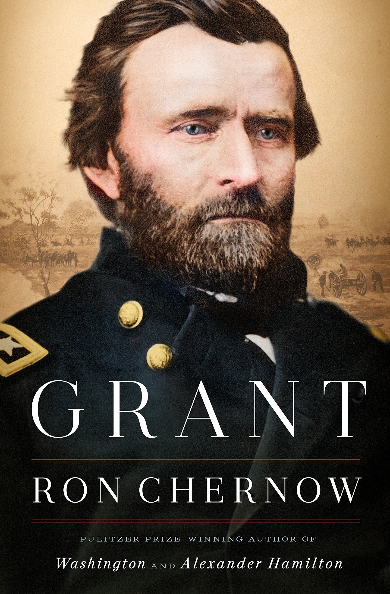

"Grant"
- Read on 2018-04-24
- Rating: ️️️️️
- Format: 🎧 (48 hours 2 minutes)
An interesting, and thorough look into "Unconditional Surrender" Grant. An incredible horseman, thorough planner, master of emotions, seeker of national peace and unity, endless (cigar) chain smoker, at-times struggling alcoholic, doting husband, trusting-to-a-fault human, who was loyal to the cause and Lincoln, had a ridiculous memory for the battles of his own and others, sought for improving the national condition, pioneered a new role of former Presidents, and ultimately ended up as a rather good writer. Top 10 US president? No way. Top 10 US general? Yes. Interesting book, that inevitably drags at times? Sure. Glad I read (see: listened-to) it? Absolutely.
This one was for you, Jay. I still miss you.
- Prior: Apollo 8
- Next: Fablehaven